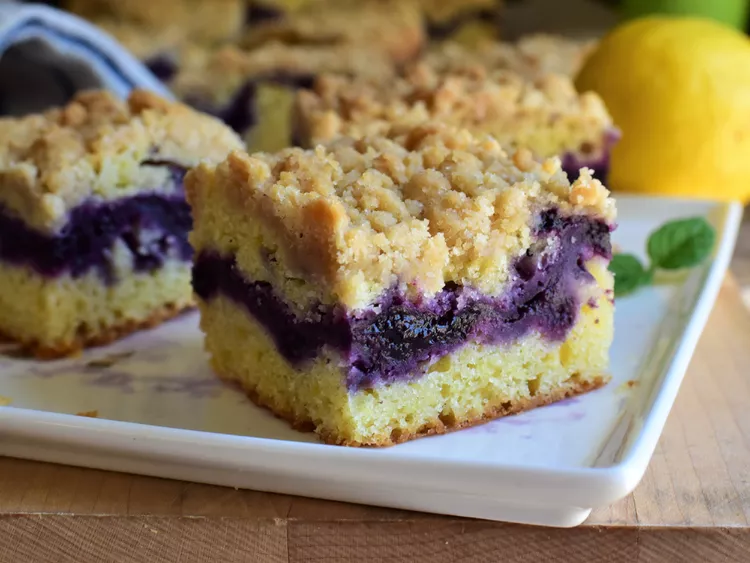

Lemon Blueberry Crumb Cake

Description
With a buttery crumb topping, a fruity blueberry filling, and a tender lemon
cake layer–this lemon blueberry coffee cake is sure to brighten up any morning!
Ingredients
Blueberry Filling
- 2 cups frozen blueberries
- 3 tablespoons white sugar
- 1 tablespoon lemon juice
- 1 tablespoon cornstarch
- 1 tablespoon water
Crumb Topping
- 1/2 cup all purpose flour
- 1/2 cup firmly packed light brown sugar
- 1/8 teaspoon salt
- 1/8 teaspoon ground nutmeg
- 1/4 cup cold unsalted butter, cut into cubes
Lemon Cake
- 1 1/2 cups all purpose flour
- 1/2 cup white sugar
- 1/2 teaspoon baking powder
- 1/2 teaspoon baking soda
- 1/2 teaspoon salt
- 1/4 teaspoon ground nutmeg
- 1/2 cup unsalted butter
- 1/2 cup buttermilk
- 1 large egg
- 2 tablespoons lemon zest
- 3 tablespoons lemon juice
- 1 teaspoon vanilla extract
Directions
- Place blueberries, 3 tablespoons white sugar, and 1 tablespoon lemon juice into a
saucepan over medium heat. Cook, stirring frequently, until blueberries begin to release
their juices. Mash blueberries with a potato masher until broken up. Bring mixture to
a simmer, and reduce heat to low.
- Mix together cornstarch and water in a small bowl until combined. Add to blueberry
mixture, stirring constantly. Cook until mixture has thickened, 1 to 2 minutes. Pour
blueberry filling into a shallow bowl; place in the refrigerator to cool while you
prepare the rest of the cake.
- For the crumb topping, combine 1/2 cup flour, brown sugar, 1/8 teaspoon
salt, and 1/8 teaspoon nutmeg in the bowl of a food processor. Pulse a few times to
combine. Add in 1/4 cup cold butter, and pulse several more times until mixture
resembles coarse sand. Pour mixture into a small bowl. Using your hands, press mixture
together until it forms medium to large-sized crumbs. Place crumbs into the refrigerator
while you prepare the cake.
- Preheat the oven to 350 degrees F (175 degrees C). Line an 8x8-inch square pan with
enough parchment paper to have overhang on all sides.
- To the bowl of the food processor (no need to clean it after preparing the crumb
topping), add 1 1/2 cups flour, 1/2 cup white sugar, baking powder, baking soda, 1/2
teaspoon salt, and 1/4 teaspoon ground nutmeg. Pulse a few times to combine. Add in 1/2
cup cold butter, and pulse several more times until mixture resembles coarse crumbs.
- In a small bowl or glass measuring cup, mix together buttermilk, egg, lemon zest,
lemon juice, and vanilla until combined. Add this mixture to the food processor, and
pulse until mixture just comes together, and no dry bits of flour remain, stopping to
scrape down the sides of the bowl as necessary. Batter will look somewhat lumpy from
the cold butter, but this is normal.
- Pour about 2/3 of the batter into the prepared pan, and smooth into an even layer.
emove blueberry filling from the refrigerator and spread evenly over the batter in the
pan. Place dollops of remaining batter over the blueberry filling, and spread until
most of the filling is covered with a thin layer of batter. (It is ok if not all the
blueberry filling is covered with batter.) Remove crumb topping from the refrigerator
and sprinkle evenly over the top of the batter. Very lightly press crumbs down to
slightly adhere to the batter.
- Bake in the preheated oven for 45 to 55 minutes, or until the middle of the cake
springs back lightly when touched. Cool cake in the pan until nearly room temperature,
about 10 minutes. Remove cake, using the parchment overhang, to a wire rack to cool
completely, about 20 minutes. Cut into 12 pieces.
Notes
You can also make this without a food processor. Simply mix dry ingredients together,
then cut in butter by hand, and then proceed with the recipe as written. You can also
use fresh blueberries instead of frozen.